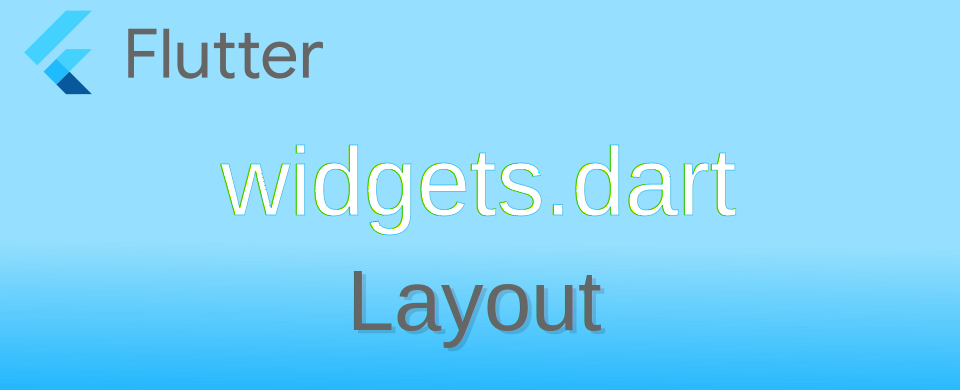

Flutter: Layout ที่ใช้เพื่อจัดพื้นที่หน้าจอ เบื้องต้น

ตัว Flutter framework มีวิธีในการวาด widget บนหน้าจอผ่าน RenderBox class โดยเราจะไม่ได้ไปยุ่งในส่วนนี้ สำหรับวิธีการวาด widget จะมีโครงสร้างลำดับเรียก widget tree แต่ถึงจะเป็น tree คล้าย ๆ กับ HTML DOM แต่วิธีการคิดแตกต่างกัน ดังนั้นอย่าเอาวิธีคิดจากการเขียน HTML DOM มาใช้กับ Flutter
ข้อมูลต่าง ๆ ที่รวบรวมมาส่วนใหญ่นำมากจาก flutter.dev และ Flutter: The Advanced Layout Rule Even Beginners Must Know
หลักการทำงานของการวาด widget ถูกอธิบายไว้ในบทความ Understanding constraints หัวใจหลักในการทำงานคือ
Constraints go down. Sizes go up. Parent sets position.
หมายถึง ตัวข้อจำกัดพื้นที่ในการวาด widget จะถูกส่งจากด้านบนลงล่าง Constraints → Widget ส่วนขนาดของ Widget ที่ถูกวาดตามเงื่อนไขของ Constraints จะถูกส่งขึ้นไปข้างบน Widget → Parent ตัว Parent จะนำข้อมูลขนาดมาวางบนหน้าจอในพื้นที่และตำแหน่งที่กำหนด อธิบายรายละเอียดได้ดังนี้
- ตัว widget จะได้รับค่า Constraints จาก Parent ของมัน โดยค่า Constraints จะประกอบไปด้วย
- min width
- max width
- min height
- max height
- จากนั้น widget จะดู child ของตัวเองทีละรายการ widget จะบอก widget ใน child ของตัวเองว่าข้อจำกัดคืออะไร (ซึ่งอาจแตกต่างกันไป) จากนั้นจึงถาม widget แต่ละตัวว่าต้องการให้มีขนาดเท่าใด
- เมื่อได้ขนาดแล้ว widget จะเรียง child ตามตำแหน่ง x y ทีละตัวจนครบ ซึ่งจะได้ขนาด width height รวมทั้งหมด
- ตัว widget จะบอก Parent ว่าตัว widget มีขนาดเท่าไหร่ (ตามเงื่อนไข Constraints ในข้อ 1)
จากลำดับการทำงาน ตัว framework จะแยกการวาง Layout ออกจากตัว widget อย่างชัดเจน จะไม่มีการมากำหนดค่าขนาด ตำแหน่งที่ตัว widget โดยตรง
ข้อจำกัดของการวาด widget
เนื่องจาก framework ถูกออกแบบมาให้ทำงานเพียงรอบเดียว เน้นประสิทธิภาพที่ดี ทำให้มีข้อจำกัดดังนี้
- ตัว widget ต้องมีขนาดตามเงื่อนไขที่ส่งมาจาก Parent constraints เท่านั้น นั้นคือจะมากำหนดขนาดของตัว widget โดยตรงไม่ได้
- ตัว widget ไม่สามารถเลือกตำแหน่งที่ต้องการได้เอง การวางตำแหน่งตัว Parent เป็นตัวคำนวณตำแหน่งที่จะวาง
- เนื่องจากตัว widget แต่ละตัวอาจอยู่ใน Parent อื่น ๆ อีกหลายชั้น ดังนั้นขนาดและตำแหน่งที่แน่นอนของ widget ใด ๆ จะไม่สามารถทำได้ เนื่องจากต้องดูโครงสร้างทั้งหมดประกอบด้วย
- ถ้า widget ตัว child มีขนาดแตกต่างจาก Parent และตัว Parent เองไม่มีข้อมูลเพียงพอว่าจะวางตัว widget อย่างไรดี จะทำให้ตัว Parent ไม่สนใจขนาดของ widget ดังนั้นการระบุ alignment ของ layout จึงเป็นสิ่งที่ควรทำ
ประเภทของ layout boxes
โดยทั่วไป layout box จะมีอยู่ 3 ประเภท โดยขึ้นอยู่กับวิธีจัดการกับ Constraints
- ขยายขนาดจนเต็มพื้นที่ เช่น Center ListView
- ทำขนาดให้พอดีกับ child เช่น Transform Opacity
- พยายามจะเป็นขนาดที่เฉพาะเจาะจง เช่น Image Text
Layout ที่ใส่ widget ได้ 1 อัน (Single-child)
เป็น Layout ที่ใช้งานมากที่สุด เป็นพื้นที่สี่เหลี่ยมที่ใส่ widget อะไรก็ได้ 1 อัน โดยมีรูปแบบของ Constraints แตกต่างกันไป ที่ใช้กันบ่อย ๆ เช่น Container
Container
ตัว Container เป็นกล่องที่มีความสามารถหลากหลาย เนื่องจากเป็นการรวม layout widget อื่น ๆ ที่ใช้บ่อย ๆ พฤติกรรมของ constraints จะขึ้นอยู่กับ constructor ว่าจะใส่ค่าอะไรเข้าไปบ้าง ซึ่งสะดวกในการใช้งานเป็นอย่างมาก แต่ก็มีข้อเสียคือ มันไม่สามารถประกาศแบบ const ได้
ตัวอย่างการใช้งาน Container แสดงกล่องที่มีขนาด 48x48 และเทสี yellow ข้างใน มีช่องว่างระหว่างขอบ 10
import 'package:flutter/material.dart';
void main() {
runApp(MaterialApp(
home: Scaffold(
body: Container(
margin: const EdgeInsets.all(10.0),
color: Colors.yellow,
width: 48.0,
height: 48.0)),
));
}
Container ที่ลงสีเหลืองขนาด 48x48 และมีช่องว่างระหว่างขอบ 10px
หากต้องการหมุนตัว Container ก็กำหนดค่าที่ transform ตัวอย่าง ลองหมุนตามเข็มนาฬิกา 0.15 radian (ประมาณ 8.6 องศา) หากมี widget ใน child ตัว widget ข้างในก็จะถูกหมุนไปด้วย
Container(
margin: const EdgeInsets.all(10.0),
color: Colors.red,
width: 48.0,
height: 48.0,
transform: Matrix4.rotationZ(0.15),
child: const Text('XXXX'),
);
หมุน 0.15 radian ตัวหนังสือ XXXX ข้างในก็จะหมุนตามด้วย
ถ้าต้องการให้ตัว Container อยู่ตรงกลางจอ ก็เพียงครอบด้วย widget ที่ชื่อ Center อีกชั้น
Center(
child: Container(
margin: const EdgeInsets.all(10.0),
color: Colors.red,
width: 48.0,
height: 48.0,
transform: Matrix4.rotationZ(0.15),
child: const Text('XXXX'),
))
ย้ายไปอยู่ตรงกลางหน้าจอด้วย Center
เมื่อลองไปดูใน widget tree และเปิดดู Layout explorer จะพบว่าในแต่ละ widget จะมีค่า constraints ระบุอยู่ หากเขียน code แล้วพบปัญหา สามารถดูจากค่าเหล่านี้เพื่อหาสาเหตุที่เกิดขึ้นได้
Layout explorer กับค่า constraints

Container สามารถใช้งานได้หลากหลายเพราะเป็นการรวมเอา widget พื้นฐานหลายตัวมาใช้งาน โดยคำสั่งใน constructor จะทำการเลือกสร้าง widget ตามค่าส่งมา เช่น
ถ้ากำหนดค่า padding มา มันจะสร้าง Padding กลับมา
ถ้ากำหนดค่า decoration ก็จะสร้าง DecoratedBox กลับมา
คำแนะนำจากผู้ออกแบบ framework คือ ถ้าคุณใช้งานแล้วพอใจ รู้สึกสะดวกสบาย ไม่มีปัญหาเรื่องการดูแล code ก็สามารถใช้งานได้ตามต้องการ ไม่ต้องกังวลว่าต้องใช้ layout widget ที่มีคุณสมบัติเฉพาะถึงจะดี
ConstrainedBox กำหนดค่า Constraints เอง
ConstrainedBox สามารถระบุค่า constraints เพื่อให้ child ได้ใช้คำนวณขนาดของมัน ตาม layout ที่ต้องการ ตัวอย่าง หากกำหนดค่า BoxConstraints อยู่ในช่วง 70 ถึง 150 ตัว child จะใช้ค่านี้อ้างอิงในการคำนวณขนาดของมัน ซึ่ง Container ที่อยู่ใน child แม้จะระบุขนาดเป็น 10x10 แต่ขนาดจริงที่ปรากฎบนจอจะเป็น 70x70 แทน
Center(
child: ConstrainedBox(
constraints: BoxConstraints(
minWidth: 70,
minHeight: 70,
maxWidth: 150,
maxHeight: 150,
),
child: Container(color: Colors.red, width: 10, height: 10),
))
ผลจากการใช้ ConstrainedBox
UnconstrainedBox ยกเลิกค่า constraints ที่จะส่งให้ child
อันนี้จะตรงข้ามกับ ConstrainedBox ตัว UnconstrainedBox จะไม่ส่งต่อค่า constraints จาก Parent ไปยัง child ของมัน ทำให้ตัว widget ไม่โดนจำกัดขนาด ในตัวอย่างจะเป็นการสร้าง Container มีขนาด 1000x10 ซึ่งโดยปกติหากไม่ใส่ไว้ใน UnconstrainedBox ตัว Constraints จะยาวได้แค่สุดขอบจอ แต่พอไม่จำกัด อาจจะเกิดเหตุการณ์ overflow ได้
Center(
child: UnconstrainedBox(
child: Container(
color: Colors.red,
width: 1000,
height: 10
)))
ผลจากการใช้ UnconstrainedBox
LimitedBox กำหนดค่า constraints หาก Parent ไม่ส่งมา
ในกรณีที่ตัว widget ไม่พบ constraints ที่ส่งมาจาก Parent อาจจะพบปัญหาว่าตัว widget พยายามกำหนดขนาดจะไม่สามารถวาดบนหน้าจอได้ ปัญหานี้่แก้ไขได้ด้วย LimitedBox ในกรณีปกติที่ Parent ส่ง constraints ตัว LimitedBox จะไม่ทำอะไร แต่หากไม่พบจะทำการส่งค่า constraints ไปให้
OverflowBox อนุญาติให้ล้นจอได้ ไม่ต้องเตือน
ในกรณีที่อนุญาติให้ widget มีขนาดจนล้นหน้าจอได้ และไม่ต้องการให้ตัว framework แจ้งเตือน สามารถใช้ OverflowBox ซึ่งหลักการจะคล้ายกับ UnconstrainedBox ตัว OverflowBox สามารถระบุค่า constraints ที่ต้องการได้ หากไม่ระบุตัวตัว OverflowBox จะมีค่า constraints เท่ากับ Parent
ตัวอย่าง OverflowBox ที่กำหนดค่า constraints ให้สามารถสร้างความกว้างได้ไม่จำกัด ผลที่ได้คือ ตัว Container สามารถมีขนาดได้ 1000px โดยที่จะถูก crop อัตโนมัติและไม่มีการแจ้งเตือนการ overflow
OverflowBox(
maxWidth: double.infinity, // width is unconstrained
child: Container(color: Colors.red, width: 1000, height: 10),
)
ผลจากการใช้ OverflowBox
หากต้องการกำหนดขนาดของ OverflowBox ให้ใช้ SizedOverflowBox แทน
FittedBox ย่อ widget ให้พอดีกับ Box
ตัว FittedBox จะช่วยย่อขนาดของ widget ที่อยู่ใน child ให้เต็มตัวมันเองเสมอ หากขนาดของ widget ไม่เกินค่า constraints ก็จะแสดงผลตามปกติ แต่ในกรณีที่ใหญ่กว่า มันจะย่อ widget ให้ไม่เกินค่า constraints
ตัวอย่างเปรียบเทียบการแสดง Text ขนาดปกติ ไม่เกินหน้าจอ
FittedBox(
fit: BoxFit.contain,
child: Text('Hello World!!')
)
แสดงผลตามปกติ
ลองขยาย Text เป็น 10 เท่า เพื่อให้เห็นว่ามันไม่สามารถแสดงบนหน้าจอได้ทั้งหมด
Text(
'Hello World!!',
textScaler: TextScaler.linear(10)
)
ข้อความที่ขยาย 10 เท่า หน้าจอไม่สามารถแสดงข้อความได้ทั้งหมด
เมื่อเอา FittedBox มาครอบเอาไว้ ตัว FittedBox จะมีขนาดตาม constraints ของ Parent ถ้า Text ใหญ่เกิน มันจะทำการย่อขนาดลงให้พอดี
FittedBox(
fit: BoxFit.contain,
child: Text(
'Hello World!!',
textScaler: TextScaler.linear(10)
))
ข้อความที่ขยาย 10 เท่า ถูกย่อให้พอดีกับตัว FittedBox
เมื่อเอา Text ใส่ใน FittedBox จะพบว่าหากตั้งให้มีการตัดข้อความขึ้นแถวใหม่แบบอัตโนมัติ จะไม่สามารถทำได้ เนื่องจากตัว FittedBox จะย่อข้อความทั้งแถวให้พอดีเสมอ
Offstage ใช้ซ่อน widget เพื่อใช้งานแต่ไม่วาดบนจอ
Offstage จะทำงานเหมือน layout box ทั่วไป คือมันจะเอา widget ไปใส่ใน widget tree แต่ไม่แสดง widget บนจอ ประโยชน์ของมัน คือ สามารถเขียนคำสั่งให้เพื่อติดต่อกับ widget ได้ เช่น อ่านขนาดของ widget เพื่อทดลองหาขนาดจริงก่อนนำไปวาดใช้งาน หรือส่งข้อมูลไปให้ widget ทำงาน เป็นต้น
ตัวอย่าง การทดสอบอ่านค่าขนาดของ widget Text("Hello world!!", key: _widgetKey) ที่ render จริงบนหน้าจอ แต่ถูกซ่อนเอาไว้ด้วย Offstage หน้าจอจะเห็นเฉพาะปุ่มกด
import 'dart:developer';
import 'package:flutter/material.dart';
void main() {
runApp(const MyApp());
}
class MyApp extends StatefulWidget {
const MyApp({super.key});
@override
State<MyApp> createState() => _MyAppState();
}
class _MyAppState extends State<MyApp> {
final GlobalKey _widgetKey = GlobalKey();
String _getWidgetSize() {
final RenderBox renderWidget = _widgetKey.currentContext!.findRenderObject()! as RenderBox;
return renderWidget.size.toString();
}
Widget get demo => Column(
mainAxisAlignment: MainAxisAlignment.center,
children: <Widget>[
Offstage(
offstage: true,
child: Text("Hello world!!", key: _widgetKey),
),
ElevatedButton(
child: const Text('Get Text widget size'),
onPressed: () => log(_getWidgetSize())
)
]
);
@override
Widget build(BuildContext context) {
return MaterialApp(
home: Scaffold(body: Center(child: demo))
);
}
}
เมื่อกดปุ่ม จะแสดงขนาดของ Text widget ใน log
SizedBox กล่องที่เน้นเรื่องระบุขนาด สามารถขยายหรือหดได้
หากต้องการกำหนดขนาดพื้นที่ที่จะใช้ render ตัว widget ที่มีขนาดแน่นอน SizedBox สามารถทำได้ดีในเรื่องนี้ ตัวอย่างการสร้างกล่องที่ใส่ Card ข้อความ Hello World!! ขนาด 200x300
const SizedBox(
width: 200.0,
height: 300.0,
child: Card(child: Text('Hello World!')),
)
constructors ของ SizedBox
- SizedBox.expand() ขยายกล่องจนเต็ม Parent (ตามค่า constraints)
- SizedBox.shrink() ย่อเล็กที่สุดเท่าที่ Parent จะอนุญาต (ตามค่า constraints)
- SizedBox.square() กล่องสี่เหลี่ยมจัตุรัส
- SizedBox.fromSize() ขนาดกล่องตาม Size แทนการกำหนดค่า
widthheightโดยตรง
AspectRatio กล่องที่มีขนาดตามอัตราส่วนที่ระบุ
AspectRatio จะพยายามขยายให้ใหญ่ที่สุดเท่าที่ Parent จะอนุญาต โดยคงอัตราส่วนกว้างและยาวไว้ตามที่ระบุเสมอ เช่น วาดกล่องขนาด 16:9 โดยข้างในมี Container เทสีเขียวเอาไว้
AspectRatio(
aspectRatio: 16 / 9,
child: Container(color: Colors.green)
)
ตัวอย่าง กล่อง 16:9 ที่จะอยู่กลางหน้าจอ โดยจะขยายจนเต็มด้านกว้างหรือยาวเสมอ
import 'package:flutter/material.dart';
void main() {
runApp(MaterialApp(
home: Scaffold(body:
Center(
child: AspectRatio(
aspectRatio: 16 / 9,
child: Container(color: Colors.green)
)))));
}
เมื่อเปลี่ยนขนาดแอป ตัว AspectRatio จะขยายจนเต็มโดยรักษาอัตราส่วนเอาไว้
Baseline ใช้ตำแหน่งของ baseline ใน Text ในการอ้างอิง
ปกติเวลาจัดตำแหน่ง Text ตัว framework จะอ้างจากตำแหน่งทั้งชิ้นของ Text ซึ่งหาก Text มีขนาดแตกต่างกัน จะเกิดปัญหา Text เขย่ง ปัญหานี้สามารถใช้ Baseline เพื่อช่วยระบุตำแหน่งการวาง Text โดยใช้ค่า baseline ได้
ตัวอย่าง สร้าง SizedBox ความสูง 100 แล้ววาง Text ให้อยู่ด้านล่าง โดยเปรียบเทียบการใช้การ Align กับ Baseline ในการวางตำแหน่ง
SizedBox(
height: 100,
child: Align(
alignment: Alignment.bottomCenter,
child: Text('java')
))
SizedBox(
height: 100,
child: Baseline(
baseline: 100,
baselineType: TextBaseline.alphabetic,
child: Text('java')
))
การใช้ Baseline จะอ้างอิง baseline ของ Text ไม่ว่า Text จะมีขนาดเท่าไหร่ก็ตาม
Align ตัวจัดตำแหน่ง สามารถระบุขอบ หรือระยะ offset ก็ได้
Align มีความสามารถช่วยจัดการตำแหน่งของ widget ใน child ของมันโดยอ้างอิงจาก Parent โดยสามารถกำหนดเป็นมุม ขอบด้าน ที่ต้องการ หรือระยะจากมุมก็ได้ ซึ่งหากต้องการจัดกึ่งกลาง แนะนำว่าใช้ Center จะสะดวกกว่า
ค่า alignment ที่สามารถใช้งานได้
- Alignment.bottomCenter
- Alignment.bottomLeft
- Alignment.bottomRight
- Alignment.center
- Alignment.centerLeft
- Alignment.centerRight
- Alignment.topCenter
- Alignment.topLeft
- Alignment.topRight
- Alignment()
- FractionalOffset()
ข้อ 1 - 9 เป็นค่าคงที่ ที่ใชักันบ่อย ๆ คือชิดขอบ ชิดมุม หรืออยู่ตรงกลาง ในกรณีที่ต้องการระบุตำแหน่งที่ใด ๆ สามารถใช้ข้อ 10 และ 11 ในการกำหนดตำแหน่งเพิ่มเติมได้
Alignment() จะใช้ค่า (x, y) ในการระบุตำแหน่ง ค่าอยู่ในช่วง -1.0 ถึง 1.0 โดย 0.0 คือตรงกลาง
การระบุค่า x,y สำหรับ Alignment() เพื่อวางตำแหน่ง child
ในกรณีที่ใส่ค่าที่ไม่ใช่ 0.0 1.0 -1.0 แต่เป็นค่าระหว่างนั้น เช่นใช้ค่า 0.5, 0.5 จะได้ผลดังนี้
import 'package:flutter/material.dart';
void main() {
runApp(MaterialApp(
home: Scaffold(
body:
Container(
color: Colors.amber,
height: 300,
width: 300,
child: Align(
alignment: Alignment(0.5, 0.5),
child: Container(color: Colors.green, width: 30, height: 30),
)))));
}
ผลของการใช้ Alignment(0.5, 0.5) ระยะตำแหน่งคือ (202.5, 202.5)px
สำหรับวิธีการคำนวณตำแหน่ง logical pixel ของ Alignment() คือ
([ขนาด Parent] - [ขนาด child]) * (x + 1) * 0.5 =
(300 - 30) * 1.5 * 0.5 =
270 * 0.75 =
202.5
FractionalOffset() จะใช้ค่า (x, y) ในการระบุตำแหน่ง ค่าจะอยู่ในช่วง 0.0 ถึง 1.0 โดย 0.5 คือตรงกลาง ดังนั้น Alignment(0.5, 0.5) = FractionalOffset(0.75, 0.75)
การระบุค่า x,y สำหรับ FractionalOffset() เพื่อวางตำแหน่ง child
สำหรับวิธีการคำนวณตำแหน่ง logical pixel ของ FractionalOffset() คือ
([ขนาด Parent] - [ขนาด child]) * x =
(300 - 30) * 0.75 =
270 * 0.75 =
202.5
FractionallySizedBox สร้างกล่องตามอัตราส่วนของ Parent
FractionallySizedBox ช่วยให้สามารถสร้างกล่องที่มีขนาดเป็นสัดส่วนตาม Parent แทนที่จะกำหนดเป็น logical pixel ค่าขนาดที่สามารถระบุได้คือ 0.0 ถึง 1.0 แทนขนาด 0% ถึง 100% ของ Parent ของมัน ตัวอย่างการสร้าง FractionallySizedBox กว้างเต็มหน้าจอ สูงแค่ครึ่งหนึ่งของจอ
import 'package:flutter/material.dart';
void main() {
runApp(MaterialApp(home: Scaffold(
body: FractionallySizedBox(
widthFactor: 1.0,
heightFactor: 0.5,
child: Container(color: Colors.amber),
))));
}
FractionallySizedBox() ขนาด 1.0x0.5
Transform เปลี่ยนรูปร่างของ widget
Transform มีความสามารถที่หลากหลายในการปรับเปลี่ยนรูปแบบของ widget ที่อยู่ใน child โดยจะมี constructor ที่นิยมใช้บ่อย ๆ ดังนี้
ตัวอย่าง หมุนข้อความ 45 องศา ตามเข็มนาฬิกา
import 'package:flutter/material.dart';
void main() {
var angle = 22 / 7 * 0.25; // 45 degree cw
runApp(MaterialApp(
home: Scaffold(
body: Center(
child: Container(
color: Colors.yellow,
child: Transform.rotate(angle: angle, child: const Text('Hello World')),
)))));
}
หมุน Text จะเห็นว่า Text หมุนออกมานอก Container สีเหลืองที่ขนาดเท่ากับ Text
หากไม่กำหนดจุดหมุน จุดหมุนจะอยู่ตรงกลาง widget หากต้องการเปลี่ยนแปลง สามารถกำหนดค่า alignment ได้ เช่น
Transform.rotate(
angle: angle,
alignment: Alignment.centerLeft,
child: const Text('Hello World')),
หมุน Text โดยจุดหมุนอยู่ที่ด้านซ้ายของ Text
การใช้ Transform ผลของการทำงานจะเป็นการวาด widget ทับไปบนหน้าจอโดยไม่มีการขยายขนาด widget จึงไม่ผลกับ layout หากต้องการให้ตัว layout สัมพันธ์กับตัว widget ตัองใช้ widget ตัวอื่นแทน เช่น RotatedBox เป็นต้น
Layout ที่ใส่ widget ได้มากกว่า 1 อัน (Multi-child)
เนื่องจากบันทึกตัวนี้ยาวเกินกว่าที่คาดไว้ และตัว Multi-child layout widgets มีความซับซ้อนมากกว่า เลยคิดว่ายกไปไว้บันทึกอันใหม่น่าจะดีกว่า